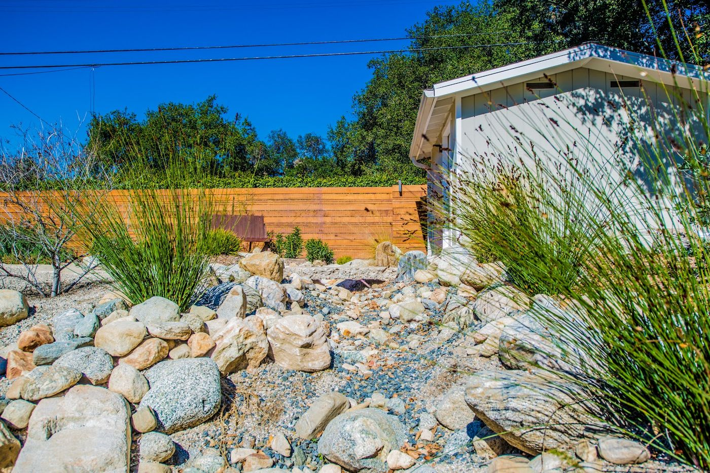
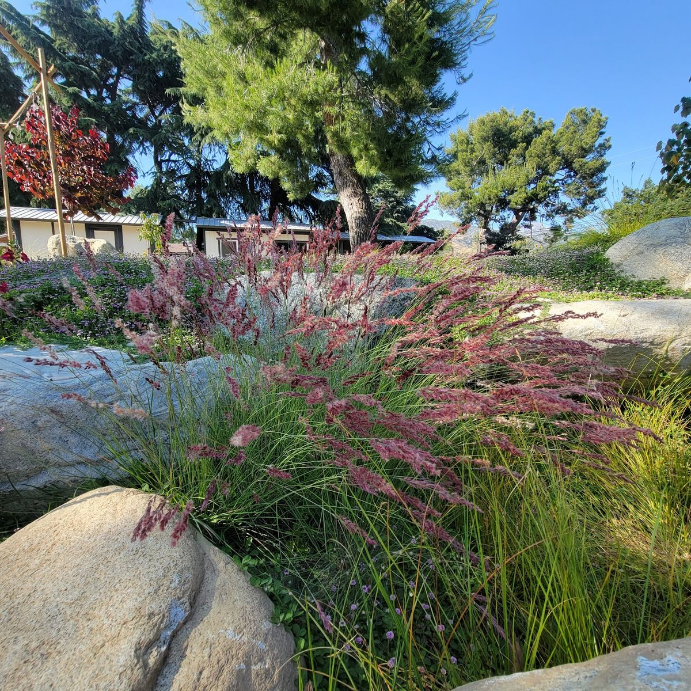
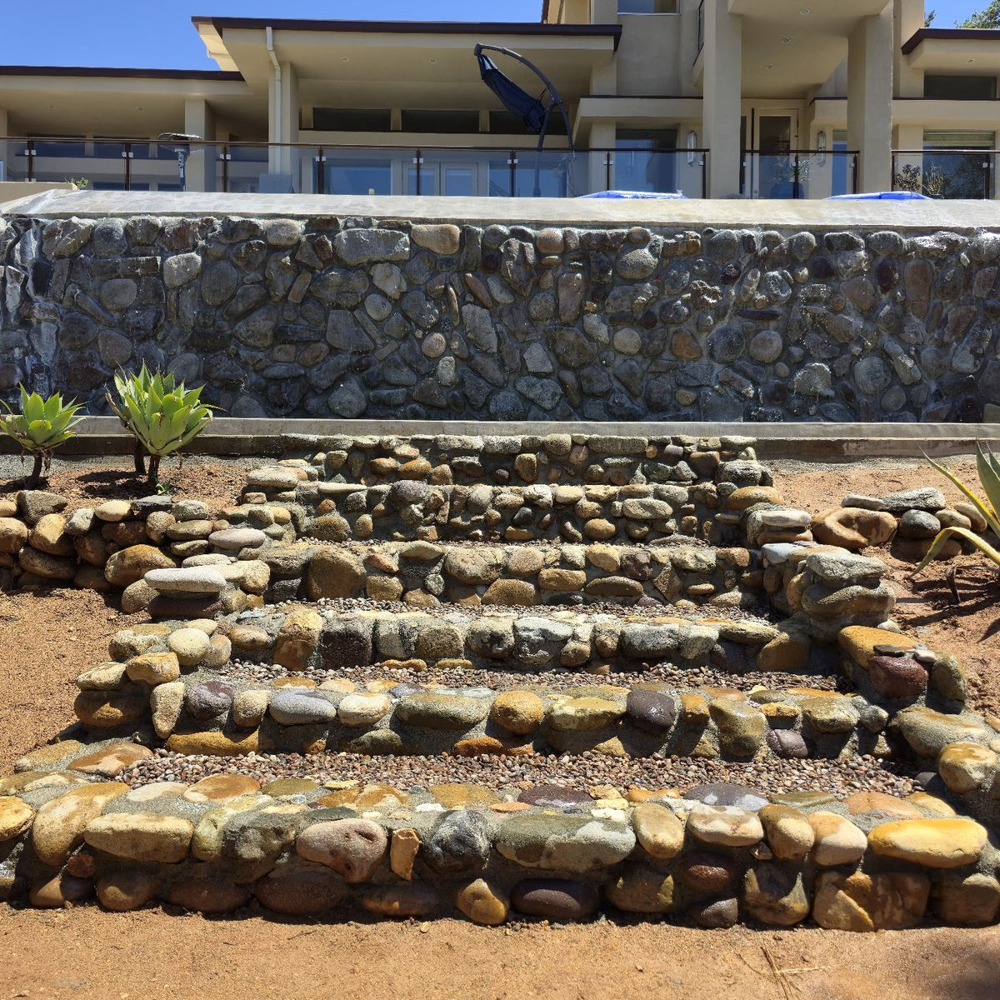
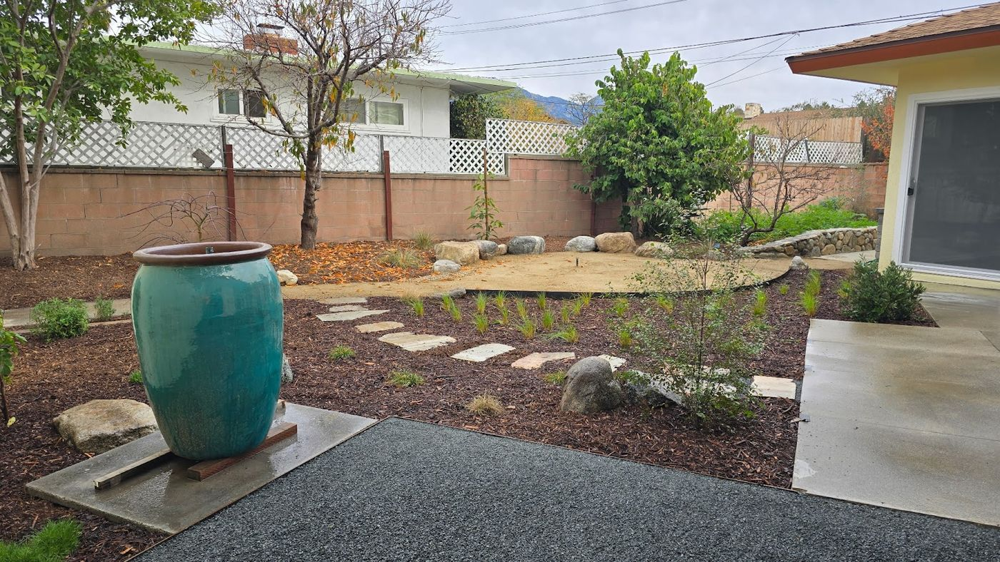
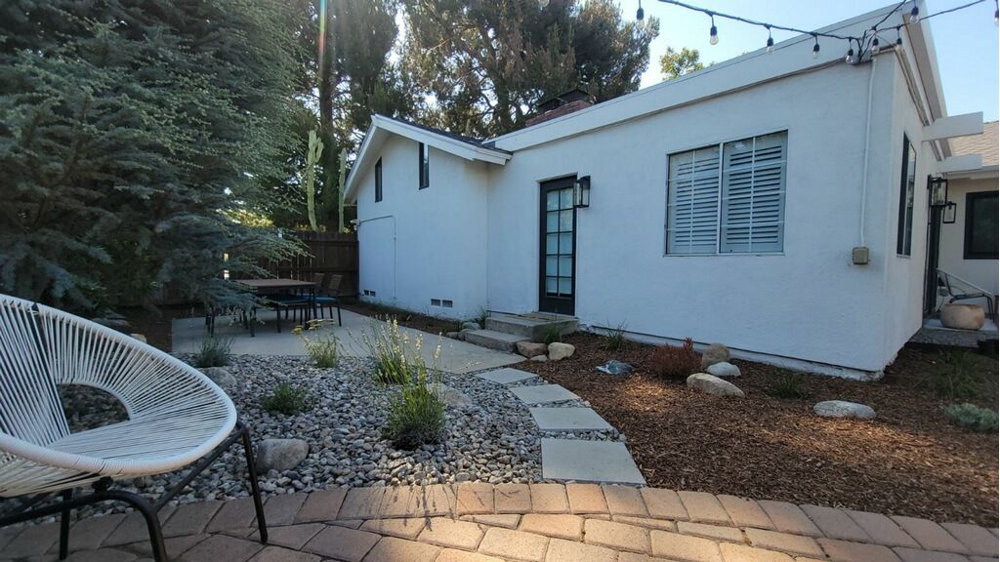
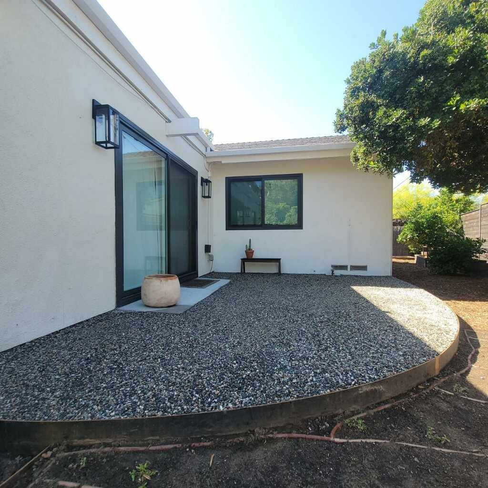

01
Landscape design & build
Front yards, back yards and side yards, planned as one scheme and then built. Reviewers describe a design that "matches the scale of the space" and a side yard reworked so new features blend with what was already there.
Water-wise landscape design & build
Residential design and build for Claremont, Upland and the wider Inland Empire. Kurapia in place of thirsty grass, drought-tolerant and native planting, stonework and dry stream beds. Andrew draws the plan; his crew builds it.

01What we do
One team from the drawing to the finished yard. Everything below is work Bentson Landscape has actually done and that clients have described.
01
Front yards, back yards and side yards, planned as one scheme and then built. Reviewers describe a design that "matches the scale of the space" and a side yard reworked so new features blend with what was already there.
02
Grass pulled out and replaced with kurapia — described by one client as "a low maintenance, drought tolerant alternative much better than artificial turf or grass."
03
Species chosen for the Inland Empire climate: native and water-wise plants, ornamental grasses, citrus and other fruit-bearing trees, plus designed planters.
04
Stone and gravel groundwork — entry walkways, river-rock steps and retaining walls, and dry stream beds that sit naturally inside the planting.
02Recent work
Photographs from Bentson Landscape's own Google Business Profile.





03In their words
Quoted exactly as written by the reviewers.
“Andrew and his team provided the perfect solution for our backyard replacement of grass by planting kurapia which is a low maintenance, drought tolerant alternative much better than artificial turf or grass.”
“Andrew and team have done a fantastic job transforming our front yard and walkway into a beautiful and inviting water wise landscape.”
“Andrew and his team transformed our dead, outdated lawn into an inviting, park-like landscape that reflects our local environment and feels welcoming and alive.”
“He has an extensive knowledge of plants and had great suggestions on which species to use to that looked good, were drought-tolerant, and some even bear fruit.”
04Where & when
Serving Claremont, Upland and the wider Inland Empire.
| Monday | 7:00 AM – 3:30 PM |
|---|---|
| Tuesday | 7:00 AM – 3:30 PM |
| Wednesday | 7:00 AM – 3:30 PM |
| Thursday | 7:00 AM – 3:30 PM |
| Friday | 7:00 AM – 3:30 PM |
| Saturday | 9:00 AM – 12:00 PM |
| Sunday | Closed |
Upland, CA — serving Claremont, Upland and the wider Inland Empire.
Start a project
Call, text or email and describe the space — front, back or side yard, anywhere in Claremont, Upland or the wider Inland Empire.